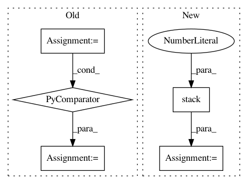

874382bfb96b92dcfdd6326ba83c54ad1e9d42f2,codes/2-basics_in_machine_learning/linear_regression/code/linear_regression.py,,,#,11
Before Change
// Data file provided by the Stanford course CS 20SI: TensorFlow for Deep Learning Research.
// https://github.com/chiphuyen/tf-stanford-tutorials
DATA_FILE = os.path.join(os.path.dirname(os.path.abspath(__file__)),"data/fire_theft.xls")
// read the data from the .xls file.
book = xlrd.open_workbook(DATA_FILE, encoding_override="utf-8")
sheet = book.sheet_by_index(0)
data = np.asarray([sheet.row_values(i) for i in range(1, sheet.nrows)])
num_samples = sheet.nrows - 1
//////////////////////////////////////////////
//// Defining flags //////////
After Change
XX = np.arange(n)
rs = check_random_state(0)
YY = rs.randint(-20, 20, size=(n,)) + 2.0 * XX
data = np.stack([XX,YY], axis=1)
//////////////////////////////////////////////
//// Defining flags //////////
//////////////////////////////////////////////
In pattern: SUPERPATTERN
Frequency: 3
Non-data size: 5
Instances
Project Name: astorfi/TensorFlow-World
Commit Name: 874382bfb96b92dcfdd6326ba83c54ad1e9d42f2
Time: 2017-06-26
Author: amirsina.torfi@gmail.com
File Name: codes/2-basics_in_machine_learning/linear_regression/code/linear_regression.py
Class Name:
Method Name:
Project Name: fgnt/pb_bss
Commit Name: 2cfa9aa576ae7544f76e66854edd304690a5822b
Time: 2019-08-08
Author: mail@lukas-drude.de
File Name: paderbox/speech_enhancement/beamformer_wrapper.py
Class Name:
Method Name: get_multi_source_bf_vector_from_masks
Project Name: librosa/librosa
Commit Name: 0bc1ab52c0b5860dbd6d4ffc904a7c87dca69475
Time: 2019-08-16
Author: brian.mcfee@nyu.edu
File Name: librosa/display.py
Class Name:
Method Name: waveplot